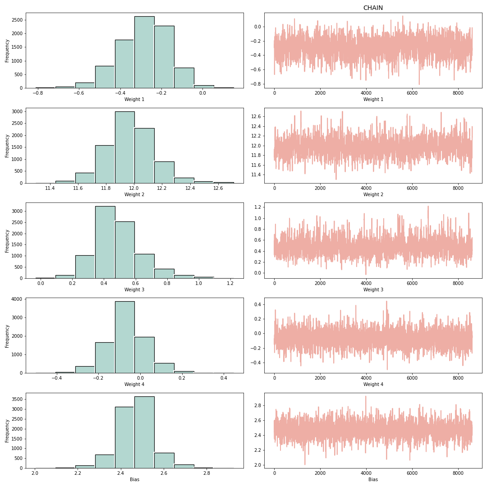

Title¶
MCMC from Scratch for Neural Networks
Description :¶
The aim of this exercise is to perform Monte Carlo Markov Chain (MCMC) from scratch for a simple neural network.
On completing the exercise you should be able to see a distribution similar to the following. One for each network parameter:

Instructions:¶
- Read the data file backprop.csv and set the predictor and response variables.
- Create 3 lists to store the weights and bias (i.e. the network parameters) and initialize the parameter values.
- Define a function
get_log_priorto compute the prior value given the network parameter values. - Compute the likelihood, prior and posterior for the initial parameter values.
- For a selected number of sampling "epochs":
- Compute new weights and bias.
- Compute the corresponding likelihood, prior and posterior.
- Compute the exponential ratio of the current and previous posterior.
- Based on the ratio, select or reject the new parameter values.
- Choose a burn rate.
- Plot the histogram of the weights and bias.
Hints:¶
np.log() Computes the natural logarithm, element-wise.
np.exp() Calculates the exponential of all elements in the input array.
tf.reshape() Reshapes a tensor.
.fit() Fits the linear model to the data.
np.random.normal() Draw random samples from a normal (Gaussian) distribution.
norm.pdf() A normal continuous random variable.
np.sum() Sum of array elements over a given axis.
np.random.uniform() Draw samples from a uniform distribution.
np.zeros() Return a new array of given shape and type, filled with zeros.
# Import necessary libraries
import matplotlib.pyplot as plt
from scipy.stats import norm
from random import sample
import tensorflow as tf
tf.random.set_seed(42)
import pandas as pd
import numpy as np
%matplotlib inline
dtype = 'float32'
# Read the data file "backprop.csv"
df = pd.read_csv("backprop.csv")
# Take a quick look at the data
df.head()
# Get the predictor and response data
X_data = df.iloc[:,0]
y_data = df.iloc[:,1]
# Helper code to visualize the data
plt.figure(figsize=(4,6))
plt.scatter(X_data, y_data,color='g' ,s = 20, alpha = 0.5, label='sample data')
plt.xlabel('X',fontsize=14);
plt.ylabel('Y',fontsize=14)
plt.subplots_adjust(left=0.0, bottom=0.0, right=2.0, top=1.0, wspace=0.2, hspace=0.2)
plt.legend()
plt.show()
# Convert the predictor and response variables to tensor data
x = tf.convert_to_tensor(X_data)
x = tf.reshape(x,(-1,1))
y = tf.convert_to_tensor(y_data)
y = tf.reshape(y, (-1, 1))
# Function to define the neural network model
# The network has 2 hidden nodes and one output node
# We use sin activation for this exercise
# The network has a total of 5 parameters - 4 weights and one bias for the output
def basic_nn(w0,w1,b1,x=x):
h1 = tf.matmul(x,w0)
a1 = tf.math.sin(h1)
h2 = tf.matmul(a1,w1) + b1
y = tf.math.sin(h2)
return y
# Define 3 empty lists to store the accepted network parameters
# The weights0_list will contain 2 weights that connects the input
# to the hidden layer
weights0_list = []
# The weights1_list will contain 2 weights that connects the hidden
# nodes to the output
weights1_list = []
# The bias_list will hold the bias added to the output of the hidden nodes
bias_list = []
# Initialize the input to hidden weights randomly from a normal distribution
# with mean=(1,1) and standard deviation=(1,1)
# Reshape the values to shape (1,2)
weights0 = tf.reshape(np.random.normal(loc=(-0.4,12),scale=(0.1,0.1), size=(1,2)), shape=(1,2))
# Initialize the hidden to output weights randomly from a normal distribution
# with mean=(-0.4,12) and standard deviation=(0.1,0.1)
# Reshape the values to shape (2,1)
weights1 = tf.reshape(np.random.normal(loc=(0.6, 0),scale=(0.1)), shape=(2,1))
# Initialize the bias randomly from a normal distribution
# with mean=1 and standard deviation=1
bias = np.random.normal(loc=2.5, scale=0.1)
# Function to get the prior given the network parameters
# NOTE - All the computations are done in the log space so
# that the numbers are managable.
def get_log_prior(weights0,weights1, bias):
# Initialize a numpy array of zeros with shape 2,1
prior_w0 = ___
# Find the probability of the first weight given the normal PDF with mean =1 and std=1
# Take the log of this value
prior_w0[0] = np.log(norm.pdf(weights0[0][0],-0.4, 0.1))
# Find the probability of the second weight given the normal PDF with mean =1 and std=1
# Take the log of this value
prior_w0[1] = np.log(___)
# Initialize a numpy array of zeros with shape 2,1
prior_w1 = ___
# Find the probability of the third weight given the normal PDF with mean =0.6 and std=0.1
# Take the log of this value
prior_w1[0] = np.log(___)
# Find the probability of the first weight given the normal PDF with mean =0 and std=0.1
# Take the log of this value
prior_w1[1] = np.log(___)
# Find the probability of the bias given the normal PDF with mean=2.5 and std=0.1
# Take the log of this value
prior_bias = np.log(___)
# Compute the prior as the sum of the previously computed priors
log_prior = ___
# Return the prior value
return log_prior
# Get the prior of the initial network parameters by calling the get_log_prior function
log_prior = ___
# Get the network predictions by calling the basic_nn function
ypred = ___
# Compute the -ve log likelihood given the true y and predicted y
log_likelihood = -np.sum(((y-ypred)**2))
# Compute the posterior as the sum of the likelihood and prior
posterior = ___
# Save the current posterior value as prev_posterior for comparision later
prev_posterior = ___
# Append weights0 to the weights0_list
weights0_list.append(weights0)
# Append weights1 to the weights1_list
weights1_list.append(weights1)
# Append bias to the bias_list
bias_list.append(bias)
# Specify the number of sampling "epochs". Set it to atleast 10000
epochs = ___
# Loop over the range of sampling "epochs"
for i in range(epochs):
if i%5000==0:
print("EPOCH: ",i)
# Get the candidate input to hidden weights randomly from a normal distribution
# with mean as the last element added to weights0_list and standard deviation=(0.1,0.1)
# Reshape the values to shape (1,2)
weights0 = tf.reshape(np.random.normal(loc=weights0_list[-1],scale=(0.1, 0.1)), shape=(1,2))
# Get the candidate hidden to output weights randomly from a normal distribution
# with mean as the last element added to weights1_list and standard deviation=1
# Reshape the values to shape (2,1)
weights1 = tf.reshape(___, shape=(2,1))
# Get the candidate bias randomly from a normal distribution
# with mean as the last element added to bias_list and standard deviation=1
bias = ___
# Get the prior values for the candidate values by calling the get_log_prior function
log_prior = ___
# Get the network predictions by calling the basic_nn function with the candidate values
ypred = ___
# Compute P(data|w) i.e. the log-likelihood given the true y and predicted y
log_likelihood = ___
# To compute the posterior given the likelihood and prior
# The posterior is the sum of the likelihood and prior
posterior = ___
# Compute the the exponential of the ratio of the posterior given its previous value
exp_ratio = ___
# If the ratio is greater than or equal to 1 then accept the candidate values in this case
if exp_ratio>=1:
# Append the candidate values to the weights and bias list
weights0_list.append(weights0)
weights1_list.append(weights1)
bias_list.append(bias)
# Save the accepted posterior as the previous posterior
prev_posterior = posterior
# If the ratio is less than 1 then get a random value between 0 and 1
else:
coin = ___
# Set a threshold value
threshold = 0.98
# Check if the random value is higher than the threshold
# Append the candidate values to the list and update the previous posterior
if coin > threshold:
weights0_list.append(weights0)
weights1_list.append(weights1)
bias_list.append(bias)
prev_posterior = posterior
# The number of data points to consider after the beta list has been populated
burn_rate = int(len(bias_list)*0.2)
# Helper code to plot the distribution of network parameter
fig, ax = plt.subplots(5,2, figsize=(15,15))
col1 = "#B2D7D0"
col2 = "#EFAEA4"
fs = 12
with plt.xkcd(scale=0.01):
ax[0][0].hist(np.array(weights0_list)[:,0,0], color=col1,linewidth=1.2,edgecolor='black')
ax[0][0].set_xlabel("Weight 1")
ax[0][0].set_ylabel("Frequency")
ax[0][1].plot(np.array(weights0_list)[:,0,0], color=col2)
ax[0][1].set_xlabel("Weight 1")
ax[0][1].set_title("CHAIN", fontsize=14)
ax[1][0].hist(np.array(weights0_list)[:,0,1], color=col1,linewidth=1.2,edgecolor='black')
ax[1][0].set_xlabel("Weight 2")
ax[1][0].set_ylabel("Frequency")
ax[1][1].plot(np.array(weights0_list)[:,0,1], color=col2)
ax[1][1].set_xlabel("Weight 2")
ax[2][0].hist(np.array(weights1_list)[:,0,0], color=col1,linewidth=1.2,edgecolor='black')
ax[2][0].set_xlabel("Weight 3")
ax[2][0].set_ylabel("Frequency")
ax[2][1].plot(np.array(weights1_list)[:,0,0], color=col2)
ax[2][1].set_xlabel("Weight 3")
ax[3][0].hist(np.array(weights1_list)[:,1,0], color=col1,linewidth=1.2,edgecolor='black')
ax[3][0].set_xlabel("Weight 4")
ax[3][0].set_ylabel("Frequency")
ax[3][1].plot(np.array(weights1_list)[:,1,0], color=col2)
ax[3][1].set_xlabel("Weight 4")
ax[4][0].hist(np.array(bias_list), color=col1,linewidth=1.2,edgecolor='black')
ax[4][0].set_xlabel("Bias")
ax[4][0].set_ylabel("Frequency")
ax[4][1].plot(np.array(bias_list), color=col2)
ax[4][1].set_xlabel("Bias")
plt.tight_layout();
⏸ Go back and change the mean and standard deviation of weights1 while intializing to 0 and 1 respectively. What change do you notice in the result distribution?¶
### edTest(test_chow1) ###
# Type your answer in the space given below
answer1 = '___'
⏸ How is the distribution affected if mean and standard deviation of prior_w1[0] and prior_w1[0] are set to 0 and 1?¶
### edTest(test_chow2) ###
# Type your answer in the space given below
answer2 = '___'
⏸ For each network parameter, what affect does increase in scale of the prior from 0.1 to 10 expect to bring out, given you start from a prior that is very close to the true value?¶
A. With a wider range of possible values, the parameters would converge to the true values faster.¶
B. The prior is a constant, and hence does not affect the the parameter convergence.¶
C. The parameters will take longer to converge to their true values as the values bounce around more.¶
D. The parameter only depends on the mean and previous prior, not the standard deviation. Hence, there would be no affect with a change in the standard devidation.¶
### edTest(test_chow3) ###
# Submit an answer choice as a string below (eg. if you choose option C, put 'C')
answer3 = '___'
# Helper code to visualize the prediction by taking the mean of the network parameters
wl = np.array(weights0_list[burn_rate:])
wl2 = np.array(weights1_list[burn_rate:])
bi = np.array(bias_list[burn_rate:])
# Take the mean of the model parameters
w0 = np.mean(wl[:,0,:], axis=0).reshape(1,2)
w1 = np.mean(wl2[:,:,0], axis=0)
w1 = tf.reshape(tf.cast(w1, dtype='float32'), shape=(2,1))
b1 = np.mean(bi)
# Get the network prediction
h1 = tf.matmul(tf.cast(x, dtype='float32'), w0)
a1 = tf.math.sin(h1)
h2 = tf.matmul(a1,w1) + b1
y_pred = tf.math.sin(h2)
# Plot the true data and model prediction
plt.plot(X_data, y_data, 'b+', label="True Data")
plt.plot(X_data, y_pred, 'ro', label = "Prediction")
plt.legend()